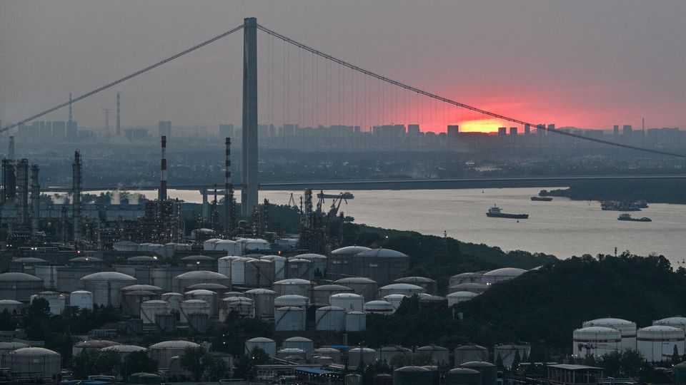
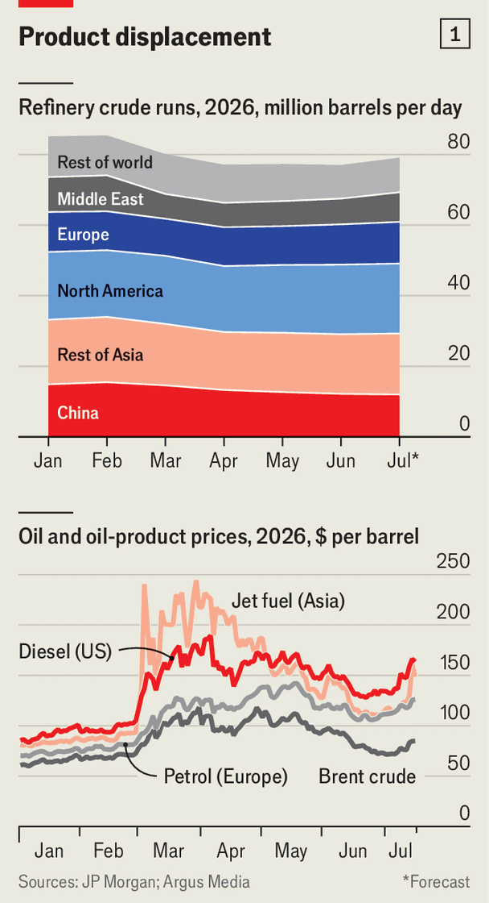
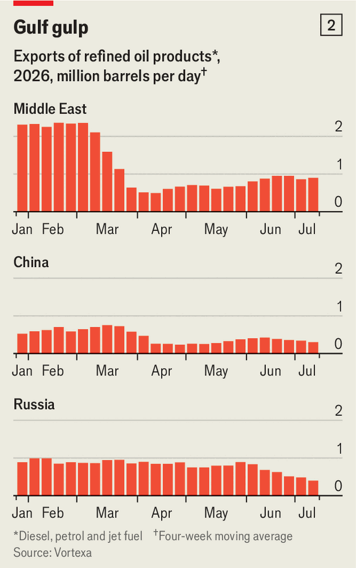

America’s Hormuz brinkmanship is worsening a global fuel crunch
Rising oil prices are only part of the problem
July 16th 2026

On july 13th President Donald Trump said America would reinstate its naval blockade on Iran and charge a 20% fee on cargo passing through the Strait of Hormuz. Brent crude, the global oil-price benchmark, jumped by 10%, to $83 a barrel. That night America launched air strikes on Iran, which responded by hitting two Emirati tankers with missiles. Yet Brent is still a quarter below April’s peak, even though the truce signed in June looks dead and Hormuz traffic has nearly stopped.

One reason prices have not risen further is that oil markets still deem it likely that, with America’s midterm elections four months away, Mr Trump will cave. On July 14th he dropped his plans for a transit fee, which is to be replaced by unspecified Gulf investments in America. A bigger factor is that the world’s supply of crude currently outpaces demand—not because production has surged, but because idled refineries are consuming less. At 79m barrels per day (b/d), the global output of refined products remains 7m b/d below pre-war levels (see chart 1, top panel).
As a result, even as crude abounds, refined products remain scarce. Their prices are between 35% and 60% higher than before the war (see chart 1, bottom panel) and traders are wagering billions that they will rise further. The International Energy Agency, an official forecaster, warns that the crunch will get much worse unless flows through Hormuz resume. The margin that refiners in Europe make on diesel is the highest since at least 2011; in America “3-2-1” crack spreads—a measure of profitability for turning crude into petrol and diesel—are hitting a record. In Asia a barrel of jet fuel fetches around $150, up from $100 or so before the war.
How bad will it get? That depends on the prospects for exports from three places: the Gulf, China and Russia. Those are uncertain at best. The Gulf used to be the largest exporter of “middle” distillates, such as diesel and jet fuel. Since February, with Hormuz mostly closed, supplies have cratered (see chart 2) and refineries’ throughput has dropped by 30% (or 3m b/d). Although crude can leave the Gulf in pipelines bypassing the strait, no such route exists for refined products. Exports picked up a bit as Hormuz partially reopened, but now only Iranian crude is getting out.
Worse, since the war began Iranian strikes have knocked out 1.4m b/d of Gulf refining capacity. The exact extent of damage remains unknown. Sarah Raffoul of Argus Media, a price-reporting agency, expects fuel exports to recover in three to four months—if Hormuz reopens.

Chinese refineries are processing 3m b/d fewer than in February. China is usually a huge exporter of petrol and diesel, but the government prohibited state-owned refiners from selling abroad during much of the war. That ban was lifted in July, as long as refiners’ stocks did not drop below the pre-war levels of late February. China’s big oil firms have tentatively increased their collective export target to roughly two-thirds of what they were selling a year ago. But with tensions in Hormuz rising, a proper lifting of export restrictions now looks a long way off, says Frédéric Lasserre of Gunvor, a trading firm. A full ban could return at any point.
Meanwhile Russia’s refineries are under assault. Ukraine’s drone campaign against them has shifted up several gears since April. Drones are hitting more targets, more often, and farther into Russia (a mega-plant in western Siberia, 2,500km from the front, was struck on July 6th). These include sophisticated units within the refineries that upgrade crude-oil fractions into high-value products. Some can take months to repair.
In June Russia’s refineries processed 3.8m b/d of crude, 1.5m b/d down from the level in January, estimates JPMorgan Chase, a bank. Most petrol and kerosene usually stays in Russia; now shortages, in the middle of holiday season, are causing chaos. In some regions drivers have queued for days, sales have been rationed and pump prices are up to 50% above normal. Farming, utilities and logistics are being disrupted, too. Nearly half of Russia’s diesel, and almost all its fuel oil, used in shipping, is usually exported. Russia is the world’s second-largest supplier of diesel (with 12% of global exports) and the leader in fuel oil (16%). Exports have slumped and the government has prohibited further diesel shipments.
That affects more than merely the few buyers braving Western sanctions against Russia. Turkey, the main one, will now keep its refined diesel at home, starving the rest of the Mediterranean, notes Mick Strautmann of Vortexa, a ship-tracker. Brazil is replacing Russian diesel with American supply, further squeezing Atlantic buyers. The loss may ripple across other products, as refiners prioritise diesel output over jet fuel and petrol, says Benedict George of Argus.
If the shooting stops in the Gulf and Hormuz reopens reliably, Asian refining resurges and Russian output recovers, supply will return just as the summer ends. But those are big ifs. A less benign scenario would oblige America—the world’s swing exporter—and importers to draw down already low stocks. Eventually product prices would jump further, squashing demand and encouraging refineries to produce more (in which case crude prices would also rise). The biggest oil shock in history is not over. The mood of motorists in America and Europe still hangs on battles thousands of miles away.■
For more expert analysis of the biggest stories in economics, finance and markets, sign up to Money Talks, our weekly subscriber-only newsletter.